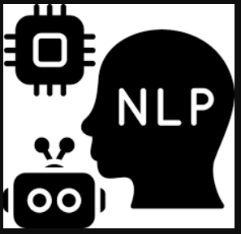

Model Architecture
Encoder-Decoder with Attention
The architecture consists of:
- Encoder LSTM: Processes Urdu input text and creates contextualized representations of input tokens.
- Attention Mechanism: Allows the decoder to focus on relevant parts of the source sentence.
- Decoder LSTM: Generates English output tokens sequentially with attention-weighted context.

Technical Stack
 Pandas
Pandas
Model Performance
The model was evaluated using BLEU scores across different datasets. The performance demonstrates the model's ability to learn translation patterns between Urdu and English, with attention mechanisms helping to align words and phrases between the two languages.
Training Set
0.85
BLEU Score
Validation Set
0.72
BLEU Score
Test Set
0.69
BLEU Score